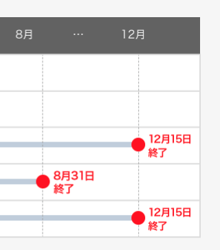

Yahoo!ブログが12月15日でサービス終了
無料ホームページのYahoo!ジオシティーズが今月3月31日でサービス終了となりますが、Yahoo!ブログも2019年12月15日にて終了が予定されています。

8月31日には「記事・コメントの投稿および編集」ができなくなり、12月15日には「ブログの閲覧」や「他社ブログへの移行」もできなくなるとのことです。
最近ではTwitterやFacebook、LINEなどのSNSが主流になっており、無料ブログを取り巻く環境は年々厳しさを増しています。「はてなダイアリー」も終了が予定されており、こちらについては「はてなブログ」へと統合されるようですが、無料ブログサービスは閉鎖される事例が多くなってきました。
この点、自分で独自ドメインを取得してレンタルサーバーで運営すれば、費用を払っている限りずっと利用することができるため、できるだけ自分でブログを開設した方がよいと思います。
Yahoo!ブログでは、移行先の無料ブログサービスとしてアメーバやライブドア、シーサー、はてなブログなどが推奨されていますが、個人的にはレンタルサーバーを借りてWordPressなどのCMSで作成した方がよいかと思います。
ぼくは年間70万円程度のサーバー費用とドメイン代をかけていますが、これまでの累計では500万円～600万円以上は使っていますので、全てを無料で済ますという考え方についてはあまり理解できないです。
もし仮にブログが月間数百万円程度の収益を生み出す結果となった場合、年間数千万円とか10年で数億円などの金額になりますが、今回のYahoo!ブログなどのようにサービス終了となった場合、それらの収益が全て消失してしまうわけです。
たった年間3千円程度のドメイン代とサーバー代を節約したばかりに、本来なら得られたはずの数億円の収益をふいにしてしまう可能性すらあります。タダより高い物はないといいますが、個人的にはある程度のお金をかけた方がメリットは多いものと感じています。
当サイトでは独自ドメインを取得してCMSでブログを作成する方法などもご紹介していますので、興味がある方はこちらの方も参照されてみることをおすすめします。